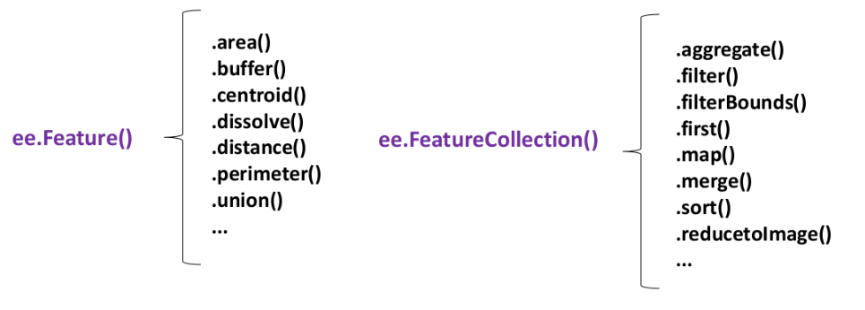
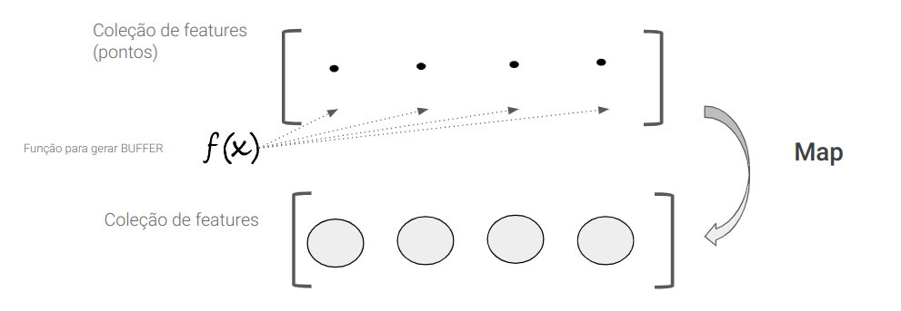
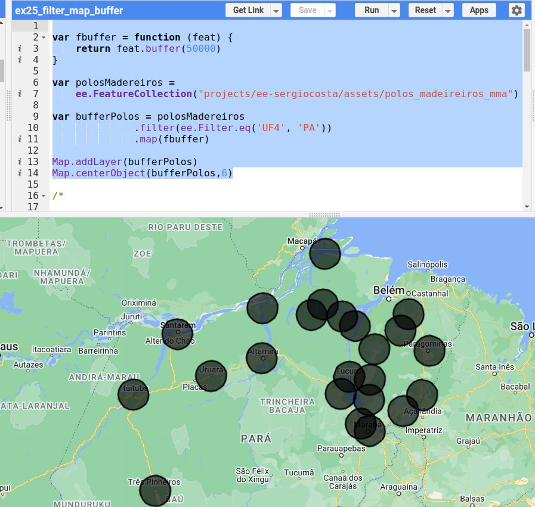
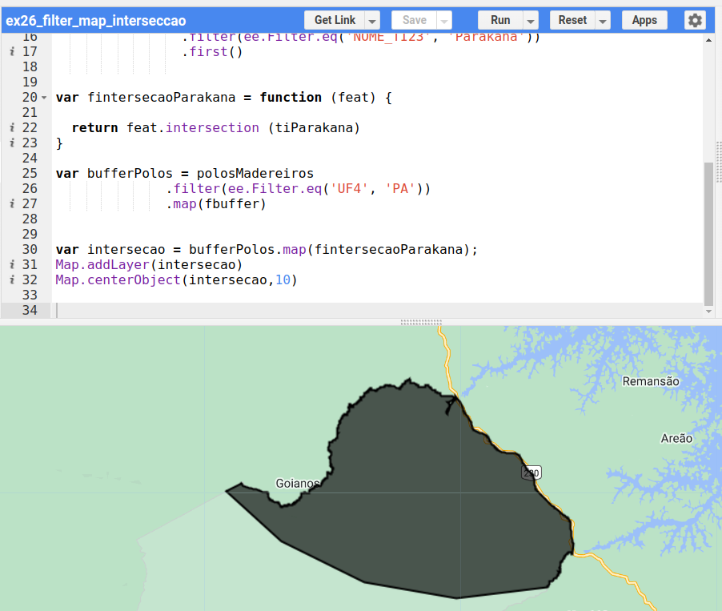
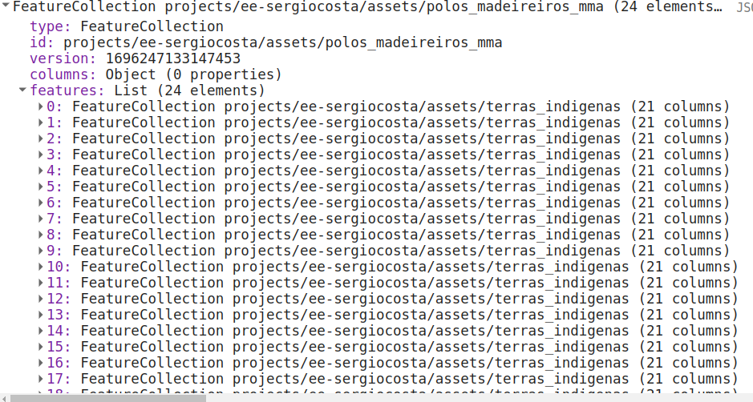
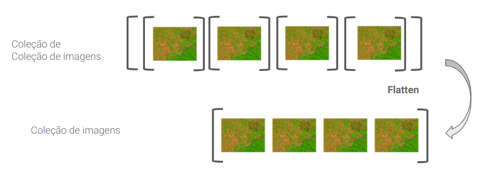
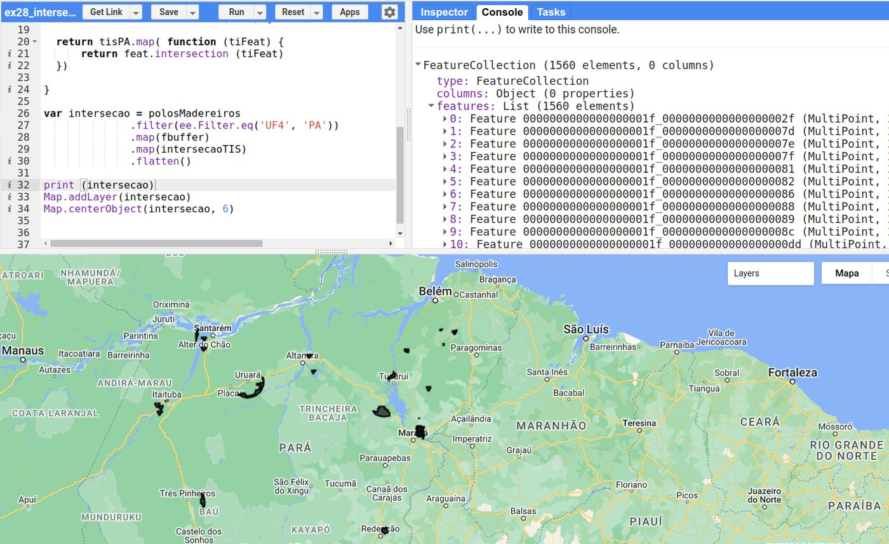
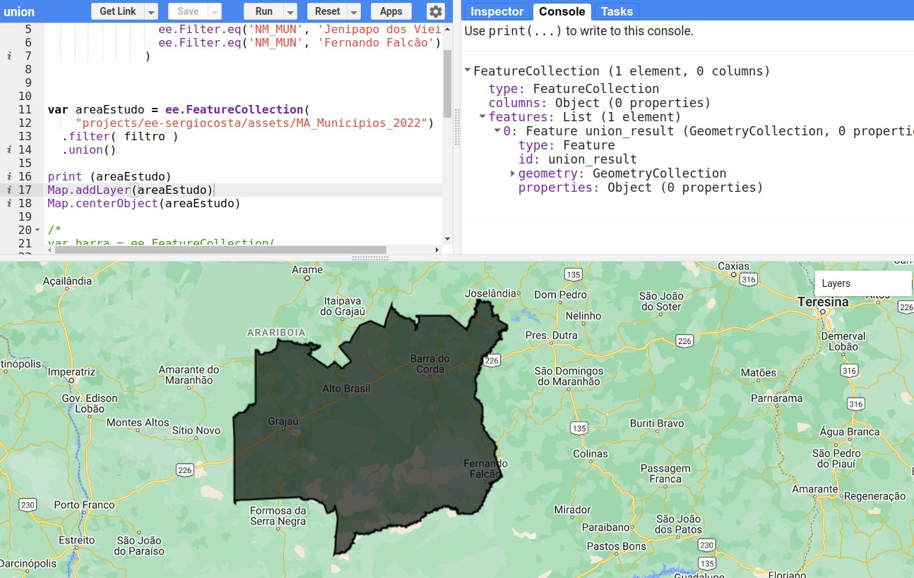
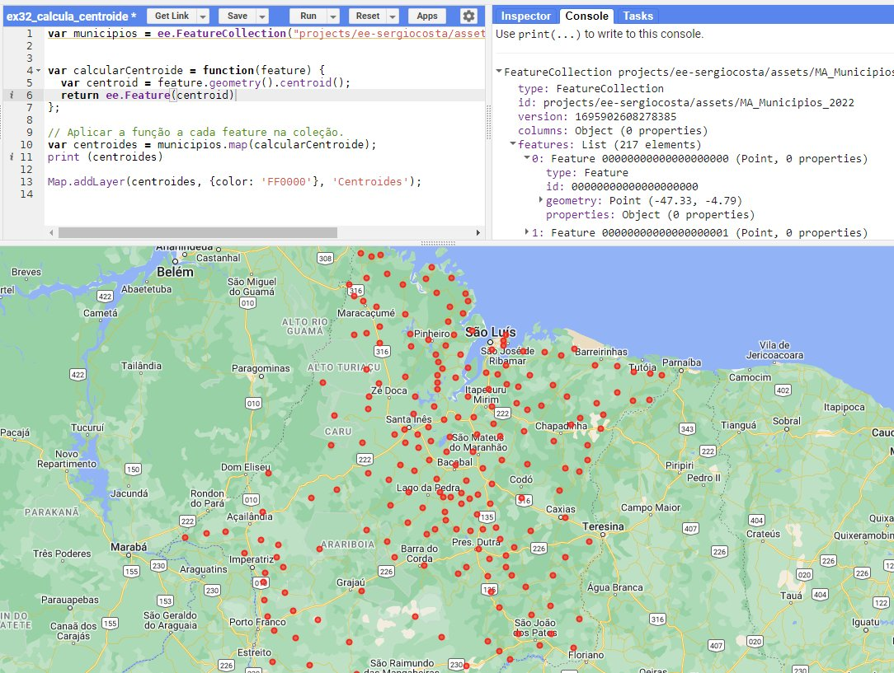
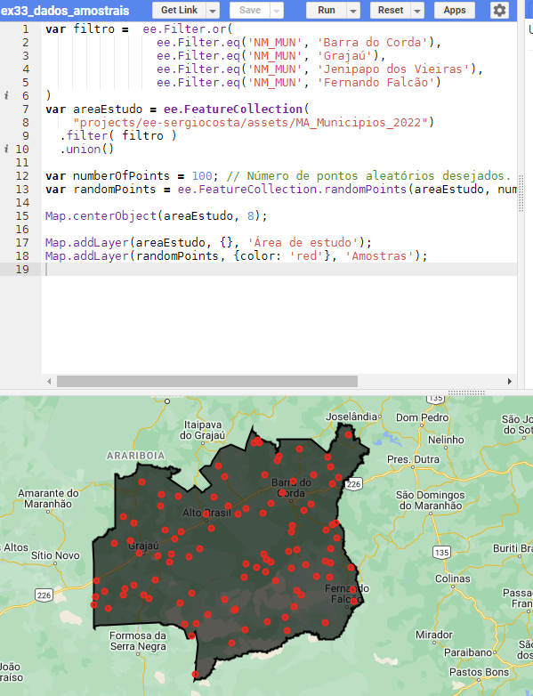

Processamento de Dados Vetoriais¶
As operações sobre dados vetoriais são comumente conhecidas como operações de geoprocessamento. Neste capítulo veremos as mais comuns: geração de faixas de distância (buffer), sobreposição de polígonos (intersecção, união e diferença), cálculo de áreas e centroides e geração de amostras aleatórias.
Antes de começar, é importante perceber que algumas operações são aplicadas a uma feição (ee.Feature) e outras a uma coleção (ee.FeatureCollection):

Operações como .buffer(), .centroid(), .area() e .intersection() são definidas para uma feição. Para aplicá-las a todas as feições de uma coleção, usamos o .map() — o segundo passo do padrão filter–map–reduce que vimos no Capítulo 3.
Dados usados neste capítulo
Baixe e envie aos seus assets (ver Capítulo 5):
- polos_madeireiros_mma.zip — polos madeireiros da Amazônia (Ministério do Meio Ambiente), 74 pontos, atributo
UF4com a sigla da UF; - terras_indigenas.zip — terras indígenas (FUNAI, 2010), atributos
NOME_TI23(nome) eUF10(UF). Versão com geometria simplificada, preparada para fins didáticos.
Lembre-se de substituir projects/ee-sergiocosta/assets/... pelo identificador dos seus assets.
⭕ Geração de faixas de distância (buffer)¶
A operação de buffer identifica zonas de proximidade ao redor de entidades geográficas — pontos, linhas ou polígonos (LONGLEY et al., 2013). Autoridades municipais podem usá-la para definir zonas de restrição em torno de rios, reservatórios ou áreas de preservação; no planejamento de transportes, para identificar as áreas a uma certa distância de estações de metrô ou paradas de ônibus.
Para realizá-la, escolhemos a entidade de interesse e a distância desejada, geralmente em metros. Suponha que queremos investigar a relação entre o desmatamento e a proximidade de polos madeireiros. O método .buffer() é aplicado a uma feição e retorna uma nova feição. Para aplicá-lo a toda a coleção, encapsulamos a operação em uma função e usamos o .map():

var fbuffer = function (feat) {
return feat.buffer(50000); // 50 km
};
var bufferPolos = polosMadeireiros.map(fbuffer);
O código completo, restrito aos polos do Pará:
var fbuffer = function (feat) {
return feat.buffer(50000);
};
var polosMadeireiros =
ee.FeatureCollection('projects/ee-sergiocosta/assets/polos_madeireiros_mma');
var bufferPolos = polosMadeireiros
.filter(ee.Filter.eq('UF4', 'PA')) // filter
.map(fbuffer); // map
Map.addLayer(bufferPolos, {}, 'Buffer de 50 km');
Map.centerObject(bufferPolos, 6);

🔀 Sobreposição de polígonos¶
A sobreposição de polígonos é uma operação fundamental nos SIGs, essencial para o planejamento urbano, a gestão de recursos naturais, a análise de riscos e muitas outras aplicações. As três operações principais são a intersecção, a união e a diferença.
| Operação | Notação | Resultado |
|---|---|---|
| Intersecção | A ∩ B | apenas a área comum a A e B |
| União | A ∪ B | toda a área de A e de B |
| Diferença | A − B | a área de A que não está em B |
Intersecção¶
A intersecção identifica as regiões de sobreposição entre duas ou mais geometrias — as áreas em que diferentes conjuntos de dados têm algo em comum. Na pesquisa sobre conflitos territoriais, por exemplo, ela identifica onde as jurisdições de várias entidades se sobrepõem. Continuando o exemplo anterior, vamos identificar as áreas de terras indígenas que estão dentro das faixas de 50 km dos polos madeireiros — algo essencial para avaliar o impacto potencial dessas atividades.
Exemplo 1 — intersecção com uma única terra indígena. Selecionamos a TI Parakanã (uma feição, obtida com .first()) e aplicamos a cada buffer uma função que retorna a intersecção com ela:
var polosMadeireiros =
ee.FeatureCollection('projects/ee-sergiocosta/assets/polos_madeireiros_mma');
var tis = ee.FeatureCollection('projects/ee-sergiocosta/assets/terras_indigenas');
var tiParakana = tis
.filter(ee.Filter.eq('NOME_TI23', 'Parakana'))
.first();
var fbuffer = function (feat) {
return feat.buffer(50000);
};
var fintersecaoParakana = function (feat) {
return feat.intersection(tiParakana);
};
var intersecao = polosMadeireiros
.filter(ee.Filter.eq('UF4', 'PA'))
.map(fbuffer)
.map(fintersecaoParakana);
Map.addLayer(intersecao, {}, 'Intersecção com a TI Parakanã');
Map.centerObject(intersecao, 9);

Observe que não foi preciso guardar o resultado do buffer em uma variável: os dois .map() foram encadeados.
Exemplo 2 — intersecção com todas as terras indígenas do Pará. Agora a função aplicada a cada buffer precisa calcular a intersecção com cada terra indígena — ou seja, precisamos de um .map() dentro de outro:
var intersecaoTIs = function (feat) {
return tisPA.map(function (tiFeat) {
return feat.intersection(tiFeat);
});
};
Executando esse código e imprimindo o resultado, nada aparece no mapa. No Console, descobrimos o motivo: o resultado é uma coleção de coleções — para cada buffer, uma coleção de intersecções.

A operação .flatten() transforma uma coleção de coleções em uma única coleção:

O código completo:
var polosMadeireiros =
ee.FeatureCollection('projects/ee-sergiocosta/assets/polos_madeireiros_mma');
var tisPA = ee.FeatureCollection('projects/ee-sergiocosta/assets/terras_indigenas')
.filter(ee.Filter.stringContains('UF10', 'PA'));
var fbuffer = function (feat) {
return feat.buffer(50000);
};
var intersecaoTIs = function (feat) {
return tisPA.map(function (tiFeat) {
return feat.intersection(tiFeat);
});
};
var intersecao = polosMadeireiros
.filter(ee.Filter.eq('UF4', 'PA'))
.map(fbuffer)
.map(intersecaoTIs)
.flatten();
print(intersecao);
Map.addLayer(intersecao, {color: 'FF0000'}, 'TIs a menos de 50 km de polos');
Map.centerObject(intersecao, 6);

Agora o Console mostra uma coleção de feições, e não mais uma coleção de coleções.
Terras indígenas em mais de uma UF
No atributo UF10, as terras que se estendem por mais de um estado aparecem com as siglas separadas por vírgula ('MT, PA', 'AM, PA', 'PA, TO'...). Um filtro ee.Filter.eq('UF10', 'PA') deixaria de fora essas terras; por isso usamos ee.Filter.stringContains, que testa se o texto contém PA. Antes de filtrar por um atributo de texto, confira os valores que ele assume.
Intersecções vazias
Quando um buffer não toca uma terra indígena, a intersecção resulta em uma geometria vazia — que também entra na coleção. Para descartá-las, filtre pela área: acrescente ao final da cadeia .map(function (f) { return f.set('area', f.area(1)); }).filter(ee.Filter.gt('area', 0)).
União¶
A união combina polígonos, gerando um novo polígono que abrange toda a área dos polígonos originais. Ela é usada para consolidar informações de diversas fontes ou para criar um polígono contínuo a partir de várias unidades menores — na gestão de recursos naturais, várias áreas de vegetação podem resultar em um único polígono de habitat. Um uso muito comum é delimitar uma área de estudo a partir de vários municípios. O código a seguir une quatro municípios do centro do Maranhão:
var filtro = ee.Filter.or(
ee.Filter.eq('NM_MUN', 'Barra do Corda'),
ee.Filter.eq('NM_MUN', 'Grajaú'),
ee.Filter.eq('NM_MUN', 'Jenipapo dos Vieiras'),
ee.Filter.eq('NM_MUN', 'Fernando Falcão')
);
var areaEstudo = ee.FeatureCollection(
'projects/ee-sergiocosta/assets/MA_Municipios_2022')
.filter(filtro)
.union();
print(areaEstudo);
Map.addLayer(areaEstudo, {}, 'Área de estudo');
Map.centerObject(areaEstudo, 8);

O filtro ee.Filter.or seleciona os municípios que satisfazem qualquer das condições. O mesmo resultado seria obtido com ee.Filter.inList('NM_MUN', ['Barra do Corda', 'Grajaú', 'Jenipapo dos Vieiras', 'Fernando Falcão']). O método .union() da coleção retorna uma nova coleção com uma única feição, cuja geometria é a união de todas.
Diferença¶
A diferença subtrai um polígono de outro, eliminando uma área específica de um polígono maior — por exemplo, remover uma área construída de uma zona de conservação ambiental. Suponha que, durante a análise, decidimos excluir o município de Grajaú da área de estudo:
var municipios = ee.FeatureCollection('projects/ee-sergiocosta/assets/MA_Municipios_2022');
var areaEstudo = municipios
.filter(ee.Filter.inList('NM_MUN',
['Barra do Corda', 'Grajaú', 'Jenipapo dos Vieiras', 'Fernando Falcão']))
.union();
var grajau = municipios
.filter(ee.Filter.eq('NM_MUN', 'Grajaú'))
.first();
var calcularDiferenca = function (feature) {
return feature.difference(grajau);
};
var resultadoDiferenca = areaEstudo.map(calcularDiferenca);
Map.addLayer(areaEstudo, {color: '999999'}, 'Área de estudo inicial');
Map.addLayer(resultadoDiferenca, {color: 'FF0000'}, 'Diferença');
Map.centerObject(resultadoDiferenca, 8);
Como areaEstudo é uma coleção (com uma feição), usamos novamente o .map() para aplicar a operação.
📏 Área e centroides¶
Cálculo de área¶
O método .area() retorna a área de uma geometria em metros quadrados, calculada sobre o elipsoide — ou seja, sem as distorções de uma projeção. Para calcular a área de todos os municípios e guardá-la como um novo atributo, usamos .map() e .set():
var municipios = ee.FeatureCollection('projects/ee-sergiocosta/assets/MA_Municipios_2022');
var comArea = municipios.map(function (feature) {
var areaKm2 = feature.geometry().area(1).divide(1e6); // m² → km²
return feature.set('area_calc_km2', areaKm2);
});
print(comArea.limit(5)); // compare area_calc_km2 com o atributo AREA_KM2 do IBGE
O argumento 1 é o erro máximo tolerado (em metros) no cálculo.
Cálculo de centroides¶
Outra operação muito comum é o cálculo do ponto central — o centro de massa — de uma geometria, o centroide. Ele é usado para posicionar rótulos em mapas temáticos, em análises de redes, de densidade e muitas outras. Aplicado a uma feição, o método .centroid() retorna uma nova feição, com o centroide como geometria e os mesmos atributos da original:
var municipios = ee.FeatureCollection('projects/ee-sergiocosta/assets/MA_Municipios_2022');
var calcularCentroide = function (feature) {
return feature.centroid(1);
};
// aplica a função a cada feição da coleção
var centroides = municipios.map(calcularCentroide);
print(centroides.limit(5));
Map.addLayer(municipios, {}, 'Municípios');
Map.addLayer(centroides, {color: 'FF0000'}, 'Centroides');
Map.centerObject(municipios, 6);

E se eu calcular o centroide da geometria?
feature.geometry().centroid() retorna apenas uma geometria, sem atributos. Para manter os atributos nesse caso, crie uma nova feição: ee.Feature(feature.geometry().centroid(1), feature.toDictionary()). Usar diretamente feature.centroid() é mais simples.
🎲 Geração de dados amostrais¶
A geração de amostras aleatórias é uma etapa fundamental em muitas aplicações de sensoriamento remoto e análise espacial: avaliar a qualidade de uma classificação de imagem, treinar algoritmos de aprendizado de máquina ou conduzir análises estatísticas. O método ee.FeatureCollection.randomPoints recebe a região de interesse e o número de pontos desejado e retorna uma coleção de pontos. No exemplo a seguir, criamos 100 pontos na área de estudo:
var areaEstudo = ee.FeatureCollection(
'projects/ee-sergiocosta/assets/MA_Municipios_2022')
.filter(ee.Filter.inList('NM_MUN',
['Barra do Corda', 'Grajaú', 'Jenipapo dos Vieiras', 'Fernando Falcão']))
.union();
var numeroDePontos = 100;
var amostras = ee.FeatureCollection.randomPoints({
region: areaEstudo.geometry(),
points: numeroDePontos,
seed: 42 // semente: garante que os mesmos pontos sejam gerados a cada execução
});
Map.centerObject(areaEstudo, 8);
Map.addLayer(areaEstudo, {}, 'Área de estudo');
Map.addLayer(amostras, {color: 'red'}, 'Amostras');

Reprodutibilidade
O parâmetro seed torna o sorteio reprodutível: com a mesma semente, os mesmos pontos são gerados. Isso é importante em trabalhos científicos, para que outras pessoas possam repetir a análise.
📝 Síntese¶
| Operação | Aplicada a | Método no GEE |
|---|---|---|
| Faixa de distância | feição | feature.buffer(distância) |
| Intersecção | feição | feature.intersection(outra) |
| União | coleção | colecao.union() |
| Diferença | feição | feature.difference(outra) |
| Área | geometria | geometry.area(erroMax) |
| Centroide | feição | feature.centroid(erroMax) |
| Amostras aleatórias | região | ee.FeatureCollection.randomPoints(...) |
| Achatar coleções | coleção de coleções | colecao.flatten() |
Para aplicar uma operação de feição a toda uma coleção, use .map().
✏️ Exercícios¶
- Gere buffers de 10 km em torno das sedes dos polos madeireiros do Maranhão (
UF4 = 'MA'). Quantos polos existem no estado? - Calcule a área (em km²) de cada terra indígena do Maranhão e liste as três maiores (dica:
.sort('area', false).limit(3)). - Construa a área de estudo formada pelos municípios da Ilha do Maranhão (São Luís, São José de Ribamar, Paço do Lumiar e Raposa) e gere 50 amostras aleatórias com semente 2024.
- Modifique o Exemplo 2 da intersecção para calcular, em cada feição resultante, a área em km², e remova as intersecções vazias.
- Explique por que o resultado do Exemplo 2 era uma coleção de coleções e o que o
.flatten()faz.